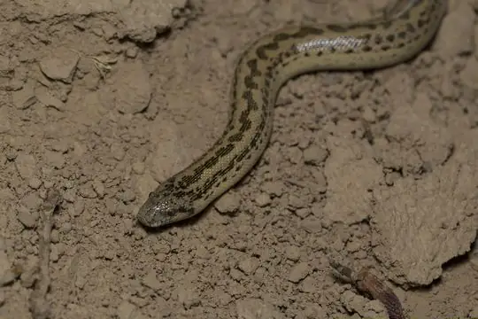
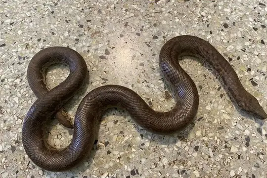

Eryx
The genus Eryx (family Boidae) has 14 species in SnakeList (none venomous), recorded in 62 countries.
- 14species
- 14non-venomous
- 62countries
About the genus
A genus of the family Boidae (boas).
Species
Showing 14 species
 Arabian Sand BoaEryx jayakari
Arabian Sand BoaEryx jayakari- No photo yetBiji Sand BoaEryx borrii
 Central Asian Sand BoaEryx elegans
Central Asian Sand BoaEryx elegans Dwarf Sand BoaEryx miliaris
Dwarf Sand BoaEryx miliaris
Eastern Sand BoaEryx vittatus Müller’s Sand BoaEryx muelleri
Müller’s Sand BoaEryx muelleri Red Sand BoaEryx johnii
Red Sand BoaEryx johnii Rough-tailed Sand BoaEryx conicus
Rough-tailed Sand BoaEryx conicus Sand BoaEryx colubrinus
Sand BoaEryx colubrinus Sand Boa (jaculus)Eryx jaculus
Sand Boa (jaculus)Eryx jaculus Sistan Sand BoaEryx sistanensis
Sistan Sand BoaEryx sistanensis- No photo yetSomali Sand BoaEryx somalicus

Whitaker's BoaEryx whitakeri- Known from fossilsEryx primitivus
No snakes in Eryx match.
About the genus Eryx
- Family: Boidae.
- Recorded in: Afghanistan, Algeria, Armenia, Azerbaijan, Bangladesh, Benin, Bulgaria, Burkina Faso, Cameroon, Central African Republic, Chad, China, Cyprus, Djibouti, Egypt, Eritrea, Ethiopia, Gambia, Georgia, Ghana, Greece, Guinea, India, Iran, Iraq, Israel, Italy, Ivory Coast, Kazakhstan, Kenya, Kuwait, Kyrgyzstan, Libya, Mali, Mauritania, Mongolia, Morocco, Nepal, Niger, Nigeria. and 22 more